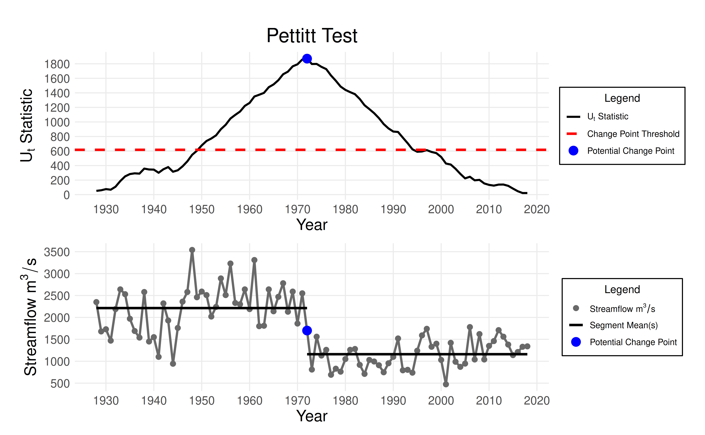
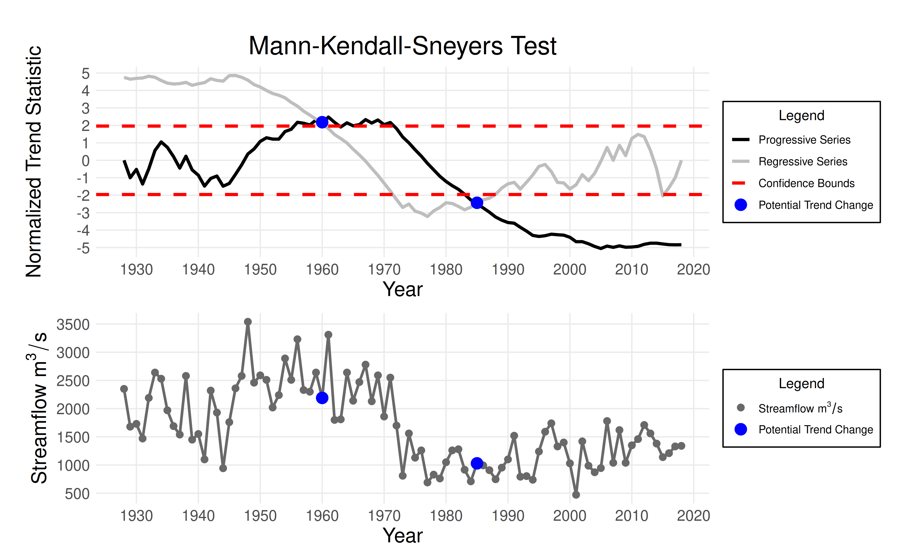

A change point is an abrupt shift or a temporal pattern switch (e.g., beginning of a trend) in a time series. In FFA, change points indicate inhomogeneous periods, meaning a single model may not represent the entire record adequately. Instead, piecewise analysis should be applied to each homogeneous sub-period. The FFA framework provides two statistical tests for change point detection:
- The Pettitt test, for sudden changes in the mean.
- The Mann-Kendall-Sneyers (MKS) test, for detecting changes in trend.
This vignette will demonstrate how these statistical tests can be used together to robustly identify change points.
Case Study
This vignette will explore the Kootenai River at Porthill (08NH021)
station, located on the border of British Columbia and Idaho. The
station is located downstream of the Libby Dam, which finished
construction in 1972. Data for this station is provided as
CAN-08NH021.csv in the ffaframework
package.
library(ffaframework)
df <- data_local("CAN-08NH021.csv")
head(df)
#> year max
#> 1 1928 2350
#> 2 1929 1680
#> 3 1930 1730
#> 4 1931 1470
#> 5 1932 2190
#> 6 1933 2640
plot_ams_data(df$max, df$year, title = "Kootenai River at Porthill (08NH021)")The Pettitt Test
This rank-based test detects a single abrupt change in the median of
a time series. The null hypothesis assumes no change point. Use the
eda_pettitt_test function to perform the test. It requires
two arguments:
-
data: the annual maximum series (AMS) -
years: corresponding numeric vector of years
pettitt_test <- eda_pettitt_test(df$max, df$year)
print(pettitt_test$p_value)
#> [1] 0
print(pettitt_test$change_year)
#> [1] 1972
plot_pettitt_test(pettitt_test)
Conclusion: A p-value of <0.001 provides strong evidence of a change point in the year 1972.
The MKS Test
The Mann-Kendall-Sneyers (MKS) test identifies trend changes in the data.
Use eda_mks_test with the same arguments as above.
mks_test <- eda_mks_test(df$max, df$year)
print(mks_test$p_value)
#> [1] 0.01495225
print(mks_test$change_df$year)
#> [1] 1960 1985
plot_mks_test(mks_test)
Conclusion: At a p-value of 0.015, there is evidence of trend changes in 1960 and 1985.
Note: Since the MKS test can identify multiple change points, the reported p-value is determined using the most significant change point.
Interpreting and Selecting Change Points
In this example, the Pettitt and MKS tests both suggest structural changes in the time series.
Consider the following guidelines when choosing where to split the data:
- Incorporate domain knowledge and case-specific understanding. In this example, we know that a water regulation structure was built in 1972 (the Libby dam). This supports the results of the Pettitt test.
- Avoid overpartitioning. The Pettitt and MKS tests operate independently and may detect multiple change points. To minimize sample size issues and reduce uncertainty, retain only significant change points with physical justification.
- Prioritize based on p-value. Lower p-values indicate stronger evidence and should be given more weight.